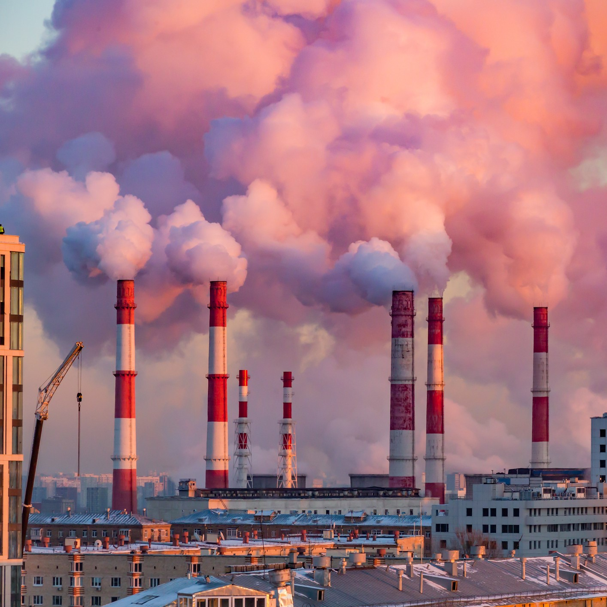

A DAY THAT WILL LIVE IN INFAMY
On August 7, 2022 -- a day that will live in infamy -- Deep State Majority Leader Chuck Schumer (D-emon)
and Traitor Joe Manchin (D-Worst Virginia) backstabbed our nation by passing the Inflation Reduction Act
through the United States Senate. With this pivotal moment, JOE BIDEN was allowed free reign to destroy
our economy, and the cheers of WOKE CLIMATE HIPPIES accompanied him as inflation continued wreaking havoc
on our lives.
GLOBAL WARMING ISN'T REAL
I am a college student at Duke University, and I was DISGUSTED to hear praises from my WOKE PROGRESSIVE CLASSMATES
marveling at how this act would fight climate change. How many ads and posters have you seen featuring wildfires
or polar bears on thin ice? TOO MANY! These cliches have been going on for SEVERAL DECADES, and the NATIONAL DEBT
has only gone UP. I'll make this clear. Climate change is NOT REAL and RENEWABLE ENERGY PROJECTS are a code word
for ECONOMIC DESTRUCTION. We, as patriotic Americans, need to fight back and TRIGGER these liberals, and here's
a guide for HELPING, not STOPPING, global warming.

STEP 1: VOTE FOR TRUE AMERICAN PATRIOTS
LIBERALS HATE COAL AND OIL. We need to VOTE in midterms and presidential races for proud, conservative candidates,
like the HONORABLE Kevin McCarthy (R-CA). Critics will say that in 2022, he was paid $655,339 by the oil and gas
industry according to OpenSecrets. Therefore, he was the second highest paid out of ALL U.S. politicians in this
category that year, but you should ignore that. Kevin McCarthy is a TRUE PATRIOT, and is NOT SUSCEPTIBLE to
corruption, unlike Nancy Pelosi (D-ISGUSTING). SO VOTE FOR FOSSIL FUEL PATRIOTS IN 2024!
STEP 2: BUILD MORE COAL AND GAS POWER PLANTS
America is a land BLESSED with coal deposits in West Virginia and Pennsylvania, and natural gas deposits in the
beautiful state of Texas. BUT JOE BIDEN DOESN'T WANT TO EXTRACT THESE RESOURCES. His *DEEP STATE* argues that
fossil fuel emissions are linked to higher rates of human health conditions such as (but not limited to)
breast cancer, leukemia, non-Hodgkin's Lymphoma, and lung cancer. You may be asking yourself, aren't those
things BAD? Maybe that's why Biden doesn't like fossil fuels. NO. JOE BIDEN HATES MINERS, AND YOU SHOULDN'T
RESEARCH INTO THIS ANY FURTHER.
So, if YOU find any LOCAL HIPPIES advocating for NUCLEAR or SOLAR power plants, do NOT SIGN their petitions,
JOIN their rallies, or DONATE to their cause. Instead, use your FREE SPEECH to HARASS and DOX these WOKE LIBERALS!
STEP 3: REV UP YOUR GAS CARS
LIBERAL scientists argue that transportation is one of the leading causes of greenhouse gas emissions,
and women and children are especially vulnerable. The NIH (National Institute of Hillary Clinton)
warned that PM2.5 particles emitted from car exhausts can “alter the size of a child's developing brain.”
Pregnant women exposed to elevated levels of greenhouse gasses also have an increased risk of their child
developing autism, scoring lower on IQ tests, and having trouble focusing due to ADHD. However, how many
AMONG US PERSONALLY felt these consequences? ZERO (if you ignore all the victims). The more CO2 we emit,
the faster San Francisco (YUCK) and Los Angeles (EW) will sink below the ocean waves (SEE YA!) There are
no alternatives for car pollution, and you should NEVER consider buying a low-emission electric car
because they DON'T exist.


STEP 4: NEVER LISTEN TO YOUR LIBERAL FRIENDS AND FAMILY
You, just like myself, may have BRAINWASHED LIBERAL friends and family members that ask you to listen to them
about climate change. Perhaps they are trying to convince you that future droughts and floods can destroy
agricultural regions of our country, or how plastic pollution impacts the fishing industry of small, coastal,
local economies. However, I think we ALL know that these COASTAL HIPPIES deserve it.
To CHANGE our FREE lifestyles goes against the US CONSTITUTION, and these LIBERALS want us to reconsider our
beliefs “for our children” and “clean air.” In 2024, I urge you to VOTE CONSERVATIVES to BALANCE the ECONOMY,
because fossil fuels have ALWAYS worked and will CONTINUE to work, without any negative effects on human health.
Remember to NEVER TRUST SCIENTISTS and NEVER ACCEPT THAT CLIMATE CHANGE IS REAL.